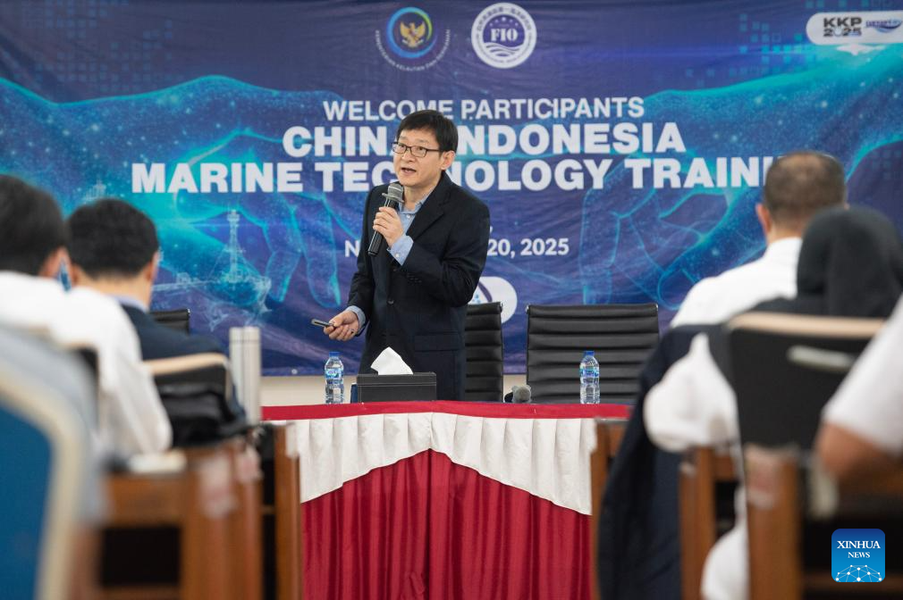
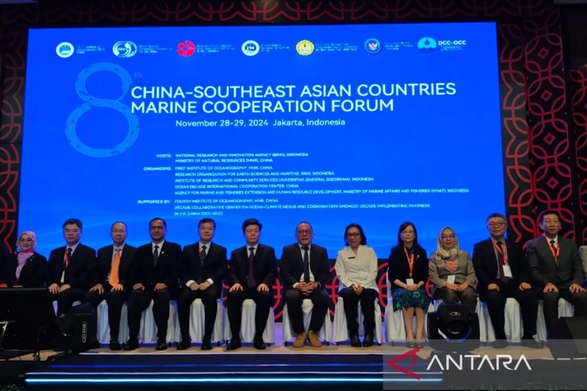
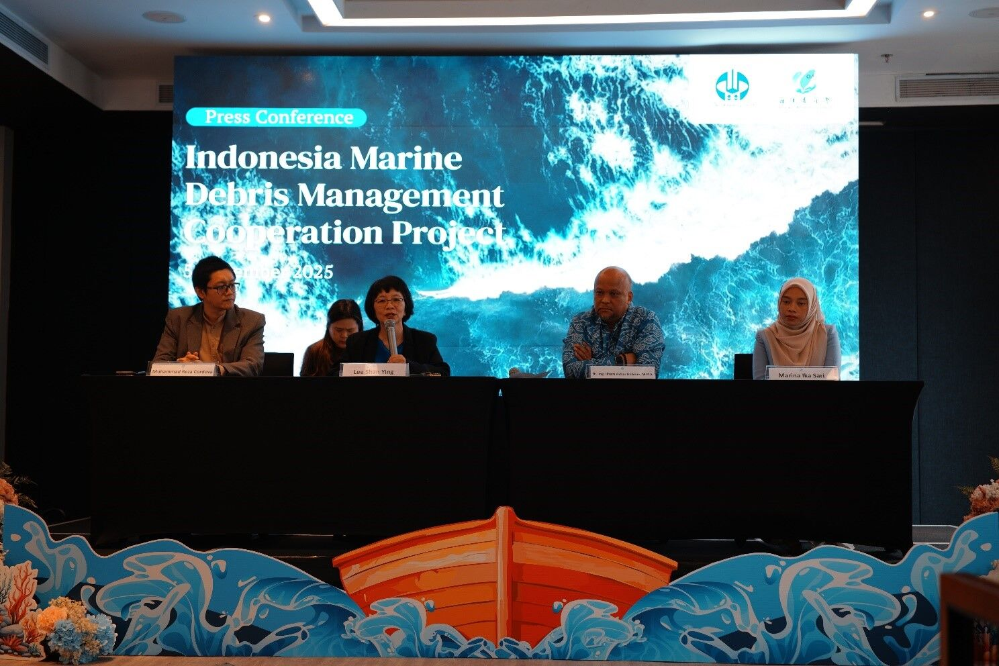
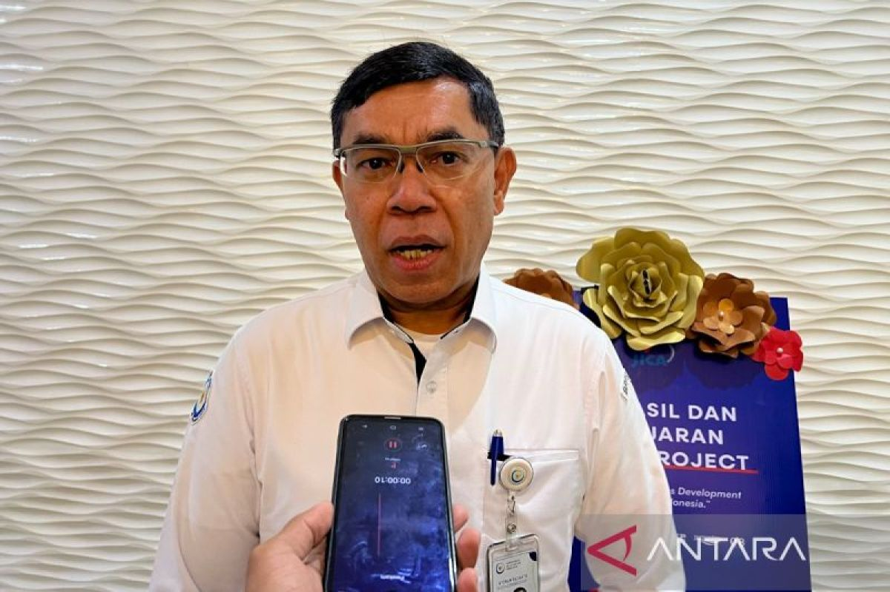

   
Pada 2025, pemerintah Indonesia melalui Kementerian Kelautan dan Perikanan (KKP) menandatangani nota kesepahaman dengan Chinese Ministry of Natural Resources dari Tiongkok untuk memperkuat kapasitas sumber daya manusia di sektor kelautan dan perikanan. Melalui kesepakatan ini, kedua negara berkomitmen menjalankan program pelatihan, penelitian bersama, hingga pertukaran data ilmiah, serta membangun pusat pelatihan kelautan dan stasiun pengamatan meteorologi laut. Tujuan kerjasama tersebut adalah meningkatkan kualitas pengelolaan perikanan dan konservasi ekosistem laut, termasuk rehabilitasi terumbu karang dan padang lamun, serta pemantauan habitat laut kritis. Dengan demikian, kolaborasi bilateral ini berpotensi memperkuat implementasi praktik perikanan berkelanjutan dan konservasi habitat laut di Indonesia, mendukung secara langsung target-target SDG 14 seperti penggunaan laut secara lestari serta perlindungan keanekaragaman hayati laut.
Melalui kerja sama ini, kedua negara memperoleh berbagai manfaat strategis yang langsung menguatkan kapasitas pengelolaan laut mereka. Bagi Indonesia, kolaborasi tersebut membuka akses ke teknologi oseanografi yang lebih maju, termasuk sistem pemantauan cuaca laut dan metode penelitian habitat pesisir yang lebih presisi. Indonesia juga mendapatkan peningkatan kualitas SDM melalui program pelatihan intensif, joint research, serta transfer pengetahuan terkait konservasi terumbu karang, padang lamun, dan pengawasan perikanan yang berkelanjutan. Hal ini bikin Indonesia makin siap menghadapi isu-isu seperti overfishing, kerusakan ekosistem pesisir, dan perubahan iklim dengan pendekatan yang berbasis sains.
Sementara itu, Tiongkok memperoleh peluang untuk memperluas jaringan riset maritimnya sekaligus menguji penerapan teknologi kelautan mereka di wilayah tropis yang punya karakteristik ekosistem berbeda dari perairan mereka sendiri. Kolaborasi ini juga memberi Tiongkok akses terhadap data biodiversitas laut Indonesia—yang dikenal sebagai salah satu pusat keanekaragaman hayati dunia—sehingga dapat memperkaya basis riset global mereka tentang konservasi laut. Selain itu, Tiongkok mendapatkan wadah diplomatik untuk memperkuat reputasi internasionalnya dalam bidang sustainable ocean governance, terutama terkait kontribusinya pada pencapaian SDG 14 di kawasan Indo-Pasifik.